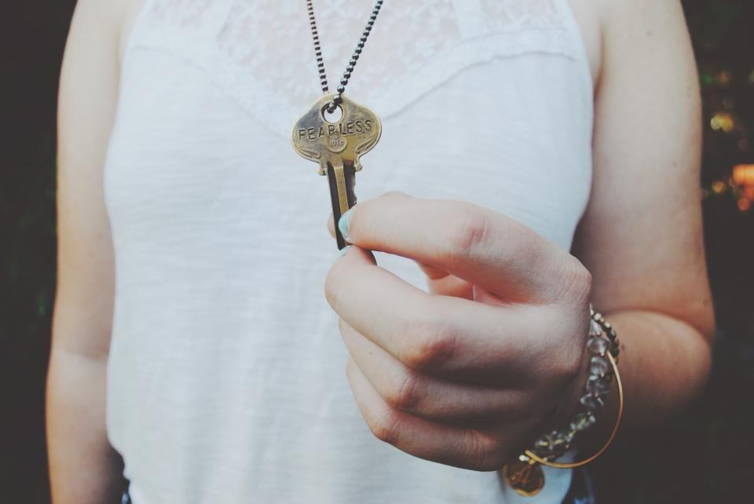

Kassaskåp som håller vad de lovar
Certifierade värdeskåp, vapenskåp och valvdörrar från 40 kilo till tre ton. Vi bär in dem, bultar fast dem och öppnar dem när koden är borta.

Vad ska förvaras?
01Värdeskåp
Kassaskåp certifierade enligt SS-EN 1143-1, grad 0 till V.
Läs mer02Vapenskåp
Skåp enligt SS 3492 som uppfyller Polisens krav för licensvapen.
Läs mer03Brandsäkra dokumentskåp
60 eller 120 minuters brandskydd för pärmar och hårddiskar.
Läs mer04Öppning av skåp
Glömd kod eller trasigt lås – vi öppnar och lagar.
Läs mer05Kodbyte och service
Nytt kodlås eller ny kod när personal slutar.
Läs mer06Flytt av kassaskåp
Trappklättrare, lastbil med kran och försäkrad transport.
Läs mer07Valvdörrar
Valv och värderum för guldsmeder, apotek och arkiv.
Läs mer08Visningslokalen
Över 40 skåp att titta på i Kopparlunden.
Läs merDe som fick upp locket
Marie och Johan K. · Hallstahammar”Vi hade ärvt ett kassaskåp utan kod. Sanna öppnade det på köksgolvet på en timme, och vi kunde behålla det.”
Henrik A. · Västerås”De räknade på bjälklaget innan de ställde ett skåp på 900 kilo i vårt kontor. Ingen annan leverantör frågade ens.”
Lars-Erik P. · Fagersta”Vapenskåpet kom med intyget i en plastficka så licensen gick igenom utan kompletteringar.”
Från försäkringsvillkor till fastbultat skåp
- 1

Vad ska skyddas?
Vi frågar efter belopp, typ av innehåll och försäkringsvillkor – det avgör vilken grad skåpet behöver.
- 2

Platsbesök
Vi mäter dörrar, trappor och bjälklag och planerar hur skåpet kommer in.
- 3

Leverans och förankring
Montörerna bär in, bultar fast och provar lås och koder tillsammans med dig.
- 4

Intyg och service
Du får certifikat för skåpet och förankringen. Vi påminner om service vart tredje år.
Klassat, provat och intygat
- SS-EN 1143-1Alla värdeskåp vi säljer är certifierade av ackrediterat provningsorgan, grad 0 till V.
- SS 3492 vapenskåpVapenskåp som uppfyller Polisens krav för förvaring av licensvapen.
- Säkerhetsprövad personalAlla tekniker är säkerhetsprövade för uppdrag i banker, apotek och myndigheter.
- Utbildade i manipulationSveriges Låssmeders Riksförbund – med teknikerutbildning i manipulation och elektroniska lås.
Tunga uppdrag i höst

Ett 1 400 kilos skåp till tredje våningen
En advokatbyrå på Stora torget fick sitt nya arkivskåp uppburet i trapphuset med trappklättraren på en lördag.
Läs mer
Bankvalv från 1962 öppnat
Ett nedlagt bankkontor i Sala hade ett valv som ingen kunde öppna. Det tog oss fyra timmar utan att borra.
Läs mer
Jaktsäsongens vapenskåp
Under augusti levererade vi 63 vapenskåp till jägare i Västmanland – rekord för en enskild månad.
Läs mer
Förvarar värden hos oss
- Köpings skyttegille
- Guldsmedja Lindh & Dotter
- Fristadens Apotek
- Västerås Advokatkollegium
- Mälardalens Regionarkiv
- Bergslagens Myntsällskap
- Jaktlaget Norrbo Västra
Skåp vi har ställt på plats
- Utfört

Advokatbyrå vid Stora torget
Brandklassat arkivskåp uppburet till tredje våningen och förankrat i bjälklaget.
- Utfört

Före detta bankkontor
Mekaniskt valvlås från 1962 öppnat genom manipulation, utan borrning.
- Utfört

Guldsmedja i Enköping
Valvdörr och värderum med tidlås för en guldsmed med egen verkstad.
- Utfört

Köpings skyttegille
Sex vapenskåp i SS 3492 och säkerhetsdörr till föreningens förråd.
- Utfört

Apotek i Eskilstuna
Kassaskåp i grad II för narkotikaklassade läkemedel, enligt Läkemedelsverkets föreskrifter.
- Pågående

Regionarkiv
Leverans av 22 dokumentskåp med 120 minuters brandskydd pågår under hösten.